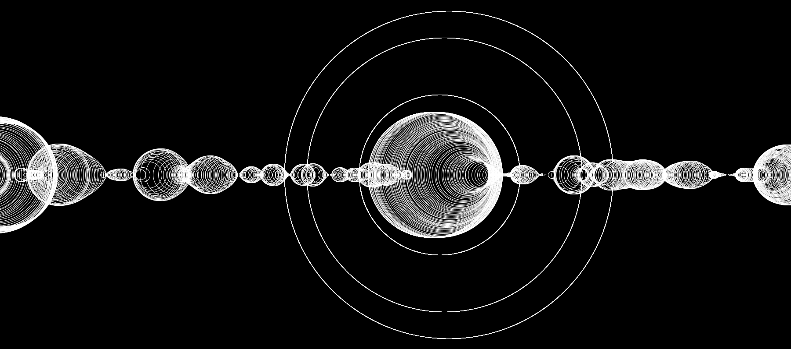

These images are samples of code-generated art from Processing Sketch #2, linked above. I coded this project after reading through a tutorial on coding for interactivity.
The tutorial really intrigued me. How do finger movements on the mousepad lead to cursor movement on the screen? Before the tutorial, I took this question for granted.
Mouse movement is an act of two translations:
[1] translation of muscle movement [human language] into numbers [computer language],
[2] translation of numbers [computer language] into an image, the mouse cursor [human language].
So, [human language] --> [computer language] --> [human language]
Computer mouse data is a collection of (x, y) coordinates*. There’s no way that I, an average human, could intuitively understand the mouse’s path if I relied solely on that raw, numerical set of coordinates. However, by adding a cursor that appears at those coordinates, I gain a much more fluid understanding of the mouse’s locations and speeds. Different displays of information work better for different machines (for our brain, a moving image; for the computer, numerical data).
This project was an attempt for me to understand the computer’s language, so I could make art with it :)